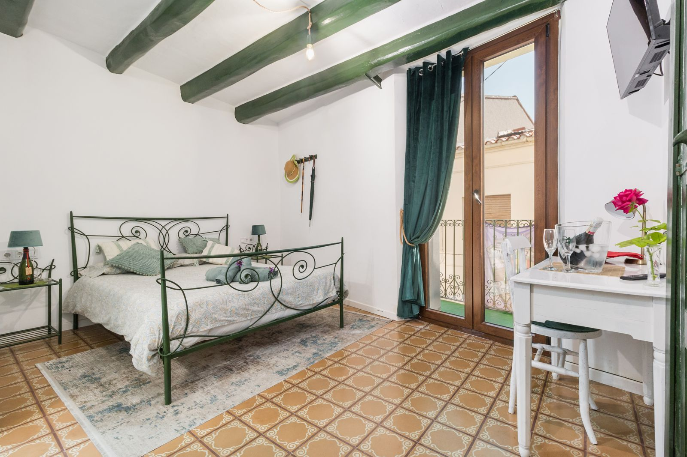
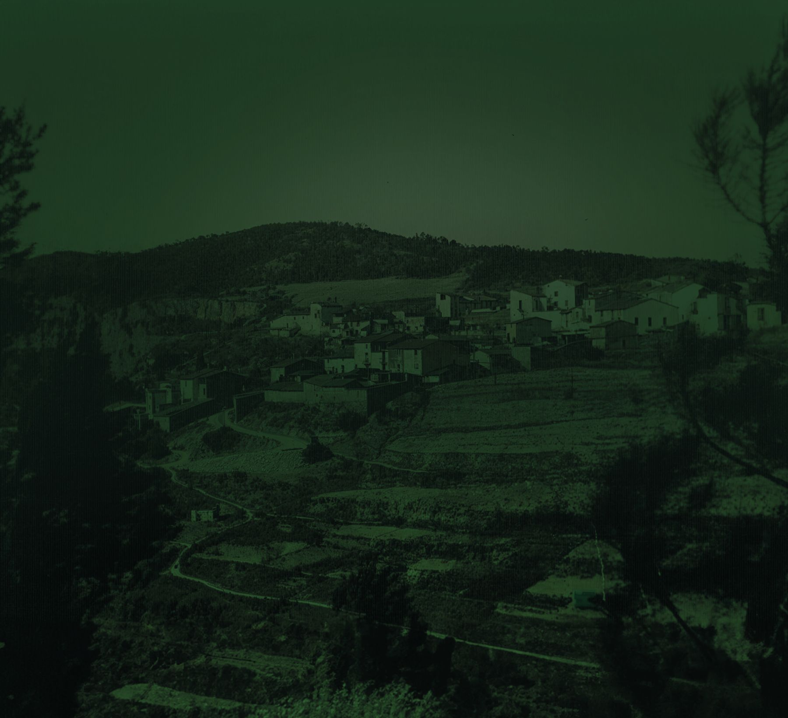

La muntanya que es veu des del Bedorc, i el seu nom.
Reservar
Allotjament rural · Des de 1898
Una casa de poble construïda entre 1898 i 1900 al cor del Bedorc, entre vinyes, oliveres i feixes de pedra, amb Montserrat a l'horitzó. L'hem restaurada per viure-la a poc a poc: bigues de fusta a la vista, parets blanques i finestres que donen a la muntanya.

Hem conservat les bigues de fusta, el terra hidràulic i els armaris antics, tot pintat del verd fosc que ara també és el nostre color. Hi hem afegit només el que fa falta per estar-hi bé: banys nous, aire condicionat i llits còmodes.
Veure els allotjaments
La muntanya que es veu des del Bedorc, i el seu nom.
Reservar
Amb el nom dels pins que envolten el poble.
Reservar
Per la tradició vitivinícola que ha modelat el paisatge.
Reservar
Amb el nom de la figuera, l'arbre de les cases de pagès.
ReservarCada allotjament conserva les bigues de fusta de la casa, pintades de verd, amb mobles antics i detalls fets a mà. Els apartaments tenen cuina pròpia; les habitacions, bany privat.

La casa es va construir entre els anys 1898 i 1900.
Durant molts anys els propietaris van viure de la pagesia.
S'hi van afegir una cort, un galliner i una petita quadra pel «Macho», el cavall que treballava la terra i transportava les collites.
La família es va anar fent gran i, sense descendència, la casa va quedar buida.
Ara forma part del projecte de la nostra família.

El Bedorc, quan els carrers eren de terra i la casa encara vivia de la pagesia.
La tradició vitivinícola que ha modelat el paisatge i la vida de la casa durant segles.
L'abundància de les collites i la història agrícola de la terra fèrtil del Bedorc.
Pau, longevitat i resistència, i els oliverars que formen part del paisatge des de sempre.
La fauna del Bedorc i l'harmonia entre la casa i la natura que l'envolta.
La silueta que es veu des del Bedorc, vincle espiritual i cultural amb la muntanya.
«Amb un hisop entintat va marcar cada cosa amb el seu nom: taula, cadira, rellotge, porta, paret, llit, cassola.»Gabriel García Márquez · Cent anys de solitud

Un entorn natural on conviuen la tradició, la natura i la vida rural: camins entre feixes de pedra seca, vinyes i oliveres, bosc i una fauna rica. Ideal per caminar, anar en bicicleta i desconnectar.